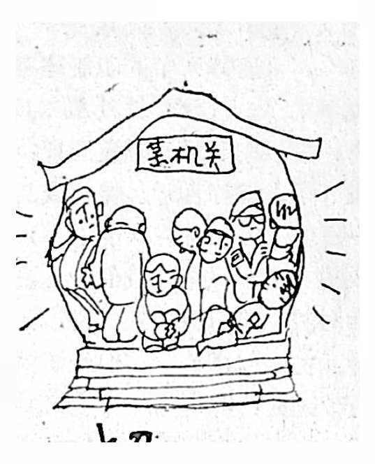

佚名 《人事》1987年第3期（总第18期），第27页
机关干部超编及其改革（题图）
Overstaffing in Government Offices and Its Reform (header drawing)
- Text in the drawing
- 某机关
A certain government office - Passage illustrated
精简机构，以解决职责不清、机构重叠、人浮于事的问题，是这次改革的目标之一。但是精简机构的效果实在不佳。
Streamlining the administrative structure, to solve the problems of unclear responsibilities, overlapping agencies and more people than work, was one of the goals of this reform. But the results of streamlining have been truly poor.From the article 机关干部超编及其改革 (“Overstaffing among Government Cadres and Its Reform”) by Yu Zhiguo, on the same page. 余指国《机关干部超编及其改革》，同页
- Description
- Header drawing for the article: a little building labeled “a certain government office” bulges at the seams, crammed with cadres of every age — an infant, a man in sunglasses, an old man in a cap.
- Note
- 超编, “exceeding the establishment,” means employing more staff than the authorized quota (编制).
- Artist
- Unattributed 佚名
- Published in
- 《人事》1987年第3期（总第18期）, p. 27
- Themes
- Overstaffing and overlapping agencies · Story illustrations

Cite
Unattributed, “机关干部超编及其改革（题图）” [Overstaffing in Government Offices and Its Reform (header drawing)], Renshi (Personnel) 《人事》, 1987, no. 3, p. 27.